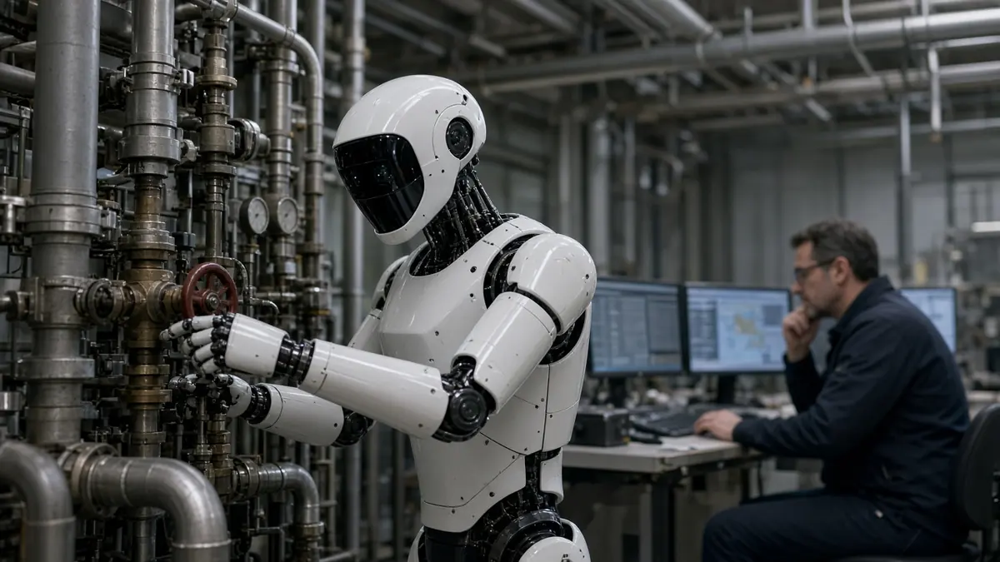

Funding
Minerva Humanoids says it raised about $10M pre-seed led by General Catalyst
Short answer: Minerva Humanoids, a San Francisco robotics start-up, said on 6 October 2026 that it has raised approximately $10 million in pre-seed funding led by General Catalyst, with Long Journey Ventures and Credo Ventures as co-leads, according to its press release.
The company says it is building humanoid robots for hazardous work in oil and gas and public safety. According to Minerva, its robot Roger is operated by trained specialists wearing VR headsets, while onboard software handles balance and navigation, and the company describes it as semi-autonomous.

Minerva names Sandor Felber as CEO and Maurice Rahme as CTO and says its first paid pilots begin this autumn. The release lists Hugging Face and Codecademy among other participants in the round.